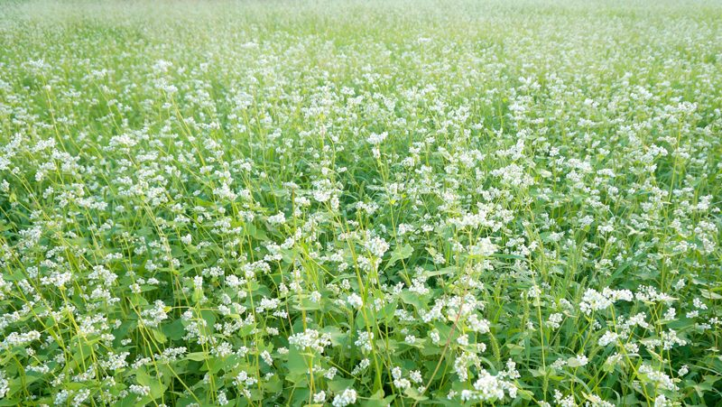
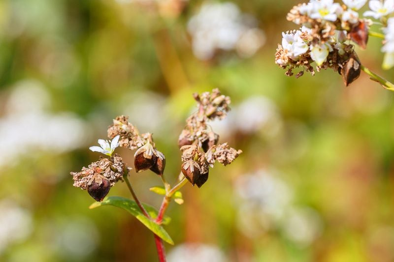
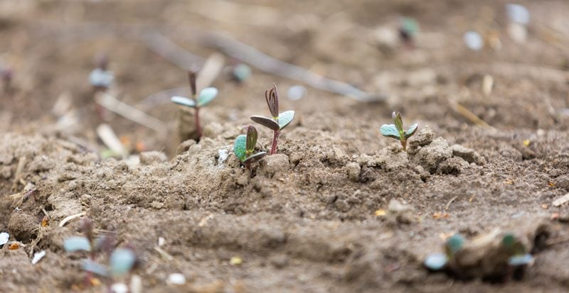

Buckwheat – Good for the Body, Good for the Land
The first time I learned about buckwheat was when my mom made my dad a buckwheat-filled pillow. If my memory serves me right, that was about twenty years ago, and he still uses them! As a long-haul truck driver, he never leaves home without it. He said that he loves it because it conforms perfectly to his head and neck providing cool, comfortable support. Can’t argue with that. But there’s more to buckwheat than just pillow making…

Once I entered the raw food lifestyle, buckwheat became a staple in our home. I always soak and sprout it before consuming, but I first had to really understand what this pillow-stuffing-superfood was. It is neither a grain nor a cereal, and it is gluten-free. So, where does it come from? Buckwheat is derived from the seeds of a flowering plant. It is similar to the sunflower seed, with a single seed inside a hard outer hull.
Raw Buckwheat and Kasha
Let’s remove some confusion… Toasted buckwheat is referred to as kasha. If you are looking for raw buckwheat groats, you’ll want to avoid kasha. You can always tell by the color and the aroma. Kasha is a darker reddish-brown color and has a strong nutty, toasted scent to it. Raw buckwheat groats are light brown or green and don’t have much of an aroma at all.

See the buckwheat attached to the wilting flower head?
Where does it Grow?
Certain parts of the Northeast are suited to grow buckwheat. These are places where the summer evenings are cool, but frost comes relatively late in the fall. These areas are at higher elevations in New York, Pennsylvania, Maryland, and West Virginia. There are also functional areas near Lake Erie, Lake Ontario, and the Finger Lakes in New York, Pennsylvania, Ohio, and Ontario. Finally, there are cool regions in Maine that are well-suited.
Growing Buckwheat Yourself
There are commercial growers for buckwheat, but it can also be grown by the novice gardener… and for a good reason. Buckwheat plants help deter unwanted pests, and at the same time, it attracts useful insects, such as a honeybee. Some people will grow buckwheat around the edges of their garden to create a pest-free zone for their up and coming produce.
If you’re organized about it, you can collect the seeds to control where it pops up next. Or you can be casual about it and let Mother Nature do her thing and just let the seeds fall. Another beauty of buckwheat is that it is economical to produce because it requires no pesticides and few herbicides.

Helps to Heal the Land
Buckwheat is used as a cover crop (a crop grown for the protection and enrichment of the soil) or a rotational crop because it can even grow in poor soil. It also is often used to prepare organic crop soil because it can eliminate weeds. It can add up to 3,000 pounds of organic matter per acre back into the soil when tilled.
It is a summer annual that is easily killed by frost. Buckwheat establishes rapidly and as easily. Its rounded pyramid-shaped seeds germinate in just three to five days. The leaves develop within only two weeks, creating a soil shading canopy filled with white flowers. These flowers are self-sterile, and as a result, must be cross-fertilized by insects or the wind for seed set to occur. It typically produces two to three tons of dry matter per acre within just six to eight weeks. The residue decomposes quickly, releasing nutrients to the next crop.
- Planting buckwheat in or around your garden will help to control those pesky weeds that keep you bent over pulling and plucking.
- Since it grows rapidly and completes its life cycle quickly, it will help prepare the ground for an early spring vegetable garden.
- Buckwheat solubilizes and takes up phosphorus that is otherwise unavailable to crops, then releases these nutrients to later crops as the residue breaks down. The roots of the plants produce mild acids that release nutrients from the soil.
- It is often the first crop planted on cleared land during the settlement of woodland areas and is still a good first crop for rejuvenating over-farmed soils.
- Buckwheat’s abundant, fine roots leave topsoil loose and friable after only minimal tillage, making it a great mid-summer soil conditioner preceding fall crops in temperate areas.
- Buckwheat can become a weed if allowed to go to seed, and that happens earlier than most realize. Kill about ten days after flowering begins.
How Buckwheat is Used
Culinary Uses
- Buckwheat can be ground into flour, making it an excellent alternative to those with gluten sensitivities.
- It can be sprouted to increase nutritional value.
- They add a great crunch to salads, trail mixes, granolas, bars, and cookies.
- It makes for wonderful and satiating breakfast cereals and porridges.
- Buckwheat is used to thicken soups, gravies, and dressings.
- Beverage-wise it is used to make tea, beer, and whiskey.
- Buckwheat is also used for soba noodles, which are long, spaghetti-like noodles that are a staple of the Japanese diet.
- Cracked buckwheat groats can be sold as grits.
- Roasted groats can be sold as kasha, which is popular in Eastern Europe and Russia.
Upholstery Filling
- Buckwheat hulls are used as filling for a variety of upholstered goods, including pillows and mattresses.
- The hulls are durable and do not conduct or reflect heat as much as the synthetic filling.
- They are sometimes marketed as an alternative natural filling to feathers for those with allergies.
- They are sold for landscaping mulch, packing material, and heating pads.
Support for Bee Colonies.
- A single acre of buckwheat can support a hive of bees producing up to 150 pounds of honey! It produces a unique flavor.
- The buckwheat plant also boasts a unique characteristic. It is used to make honey! Its aromatic flowers are especially attractive to bees. Researchers have found that honey collected from bees feeding off of buckwheat contained levels of antioxidants, such as vitamins C and E, twenty times higher than that of other honey tested.
Livestock and Poultry Feed
- It’s most suitable for cattle, but it’s fed to pigs as well. It’s often mixed with other feed types.
In Raw Food Recipe Application
- Buckwheat can be soaked and sprouted for a power-house of nutrition.
- It can be ground to a finer flour texture and used in raw breads, cookies, crusts, bars, etc.
- You can soak, flavor, and dehydrate the buckwheat kernels to create a crunchy snack that can be enjoyed alone or sprinkled on top of salads and other dishes.
Sources
© AmieSue.com